판교박물관
판교 출토 유물 학습 체험 게임 UX/UI 디자인
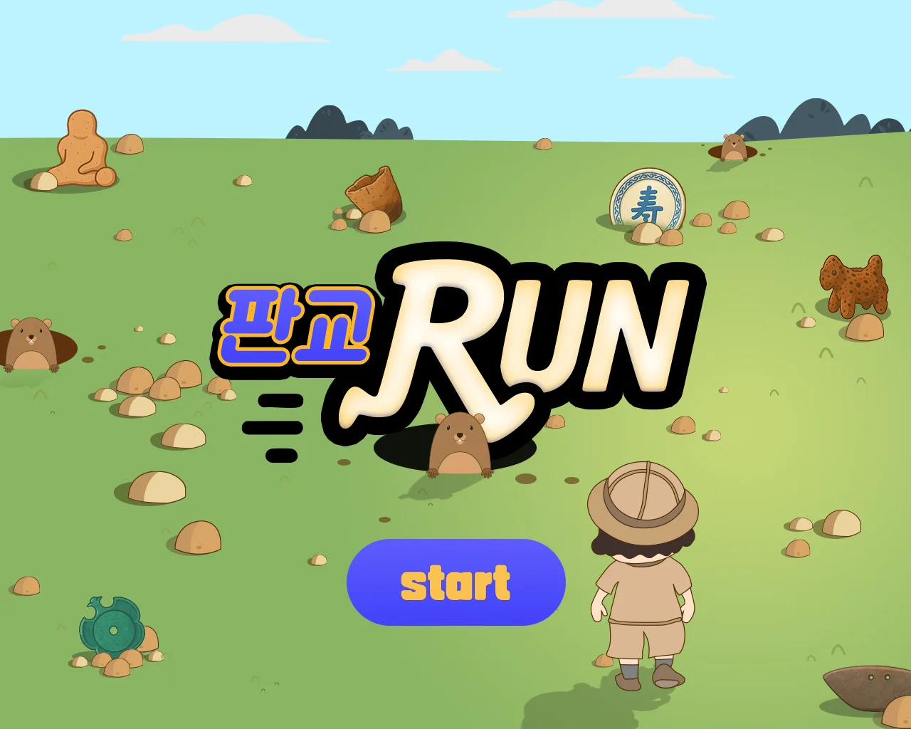
같은 유물을
두 가지 놀이로 만나게 했습니다.
판교 지역에서 출토된 유물을 어린이가 놀이로 익힐 수 있도록 새로 제작한 체험형 게임 콘텐츠입니다.
몸으로 달리며 모으는 러닝게임 '판교 RUN'과 눈으로 구분해 맞추는 퍼즐게임 '유물 PANG',
두 가지 방식으로 같은 유물을 반복해서 만나도록 설계했습니다.
유치원생부터 초등학생. 여러 관람객이 차례로 이용하는 박물관 체험 공간
1280×1024 터치 키오스크
판교 RUN (러닝·수집) · 유물 PANG (3매치 퍼즐)
박물관에서 받은 판교 출토 유물 18점(시대·재질·크기·설명)을 두 게임에 나눠 사용. 판교 RUN은 빗살무늬토기, 반달돌칼, 철마, 청동거울, 청자과형주자, 청자상감운학문매병 6점
기획을 화면으로 옮기며
유물이 남도록 다듬었습니다.
전달받은 기획 스토리보드를 실제 게임 화면으로 디자인하면서, 어린이 관람객에게 유물이 정확히 전달되도록 기획서와 다른 부분은 직접 판단해 바꿨습니다.
자리표시 도형을 실제 유물로
스토리보드의 유물은 같은 모양의 회색 항아리였습니다. 박물관에서 받은 유물 목록과 사진을 바탕으로 유물 하나하나를 일러스트로 만들어, 아이들이 게임 속에서 실제 유물의 형태와 문양을 보게 했습니다.
피해야 할 것은 유물과 확실히 다르게
기획서의 장애물은 무너진 기와와 유적지 기둥, 함정은 바닥 균열이었습니다. 이를 두더지와 구멍으로 바꿔, 모아야 할 유물과 피해야 할 장애물이 한눈에 구분되게 했습니다.
결과 화면은 유물 카드로
스토리보드의 결과 화면은 획득률 원형 그래프와 정보 칸이었습니다. 최종 화면은 유물마다 시대·재질·크기와 설명을 담은 카드로 바꿔, 방금 모은 유물을 한 장씩 다시 읽을 수 있게 했습니다.
판교 RUN 러닝게임
고고학자 캐릭터가 유적지를 달리며 양옆으로 움직여 유물을 모으는 러닝게임입니다.
라인을 고정하지 않아 어린 아이도 정확한 위치를 맞추지 않고 자유롭게 조작할 수 있습니다.
화면 하단에는 모아야 할 유물 6칸을 물음표로 비워 두고,
유물을 얻으면 획득 이펙트가 해당 칸의 게이지로 이어지도록 연출해
무엇을 모으고 있는지 플레이 내내 보이게 했습니다.
구멍과 두더지에 부딪히면 하트가 하나 줄어듭니다.
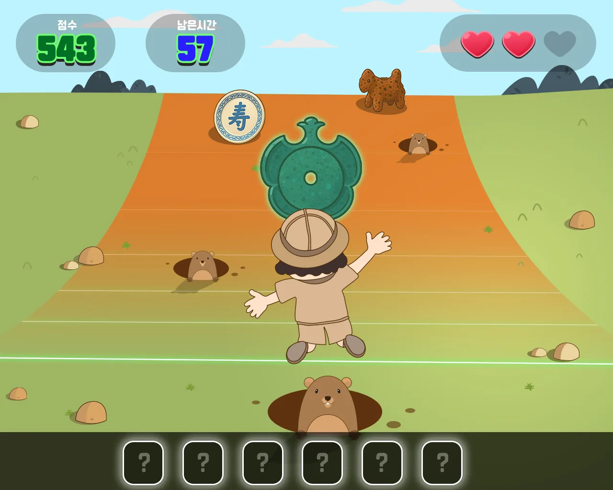
모아야 할 유물은 신석기부터 조선까지 6점입니다. 플레이가 끝나면 모은 유물의 시대·재질·크기와 설명을 유물 확인 화면에서 다시 봅니다.
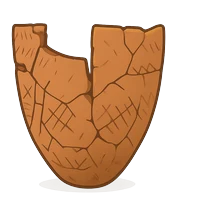
빗살무늬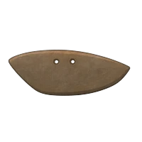
반달돌칼청동기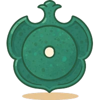
청동거울고려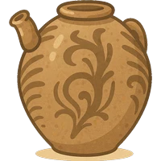
청자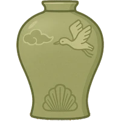
청자상감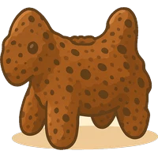
철마조선
스토리보드를
게임 화면으로
판교 RUN은 타이틀부터 랭킹까지 화면 흐름이 정리된 기획 스토리보드를 전달받아 시작했습니다. 회색 와이어프레임으로 된 화면마다 배경, 캐릭터, 유물, UI를 디자인해 실제 게임 화면으로 만들었고, 기획서와 다른 부분은 디자인 단계에서 직접 판단해 바꿨습니다.
스토리보드에서 바꾼 점
- 배경도시 블록 → 발굴 현장의 들판
- 장애물기와·균열 → 두더지·구멍
- 유물노란 원 → 실제 유물 일러스트
- 결과 화면원형 그래프·빈 정보 칸 → 시대·재질·크기와 설명을 담은 유물 카드
유물 PANG 퍼즐게임
유물 블록을 드래그해 같은 유물 3개 이상을 일직선으로 맞추는 퍼즐입니다.
한 번에 많이 깰수록 제한 시간이 늘어나 반복 플레이를 유도합니다.
단계가 오를수록 유물 종류와 판 크기가 함께 늘어납니다.
작은 블록 안에서도 유물이 바로 구분되도록, 각 유물의 가장 강한 형태 하나를 남기는 방향으로 단순화했습니다.
청화백자접시는 壽 자, 청동거울은 꽃 모양 외곽선, 철마는 말의 실루엣입니다.
1단계
유물 3종 · 6×5 판
청화백자접시 · 청동거울 · 철마
2단계
유물 4종 · 6×5 판
+ 빗살무늬토기
3단계
유물 5종 · 7×6 판
+ 토우
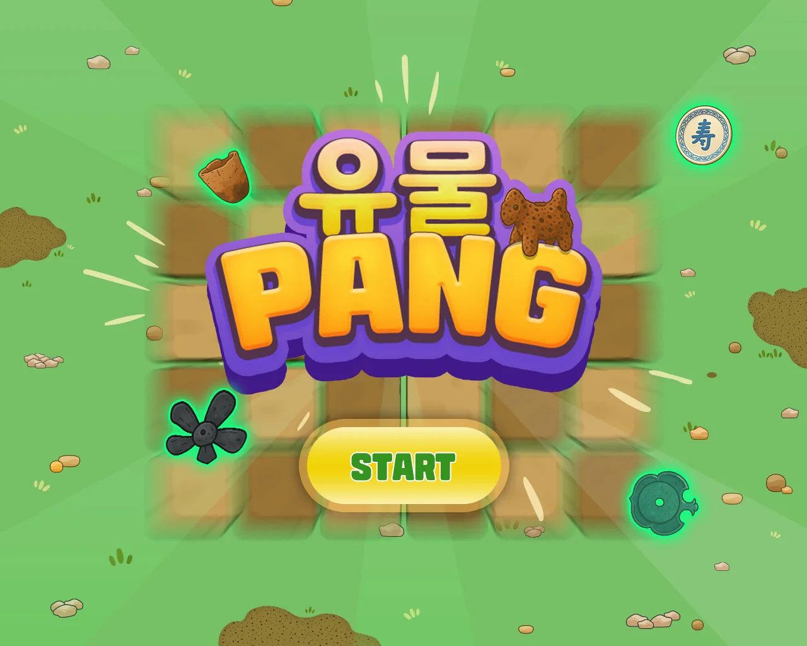
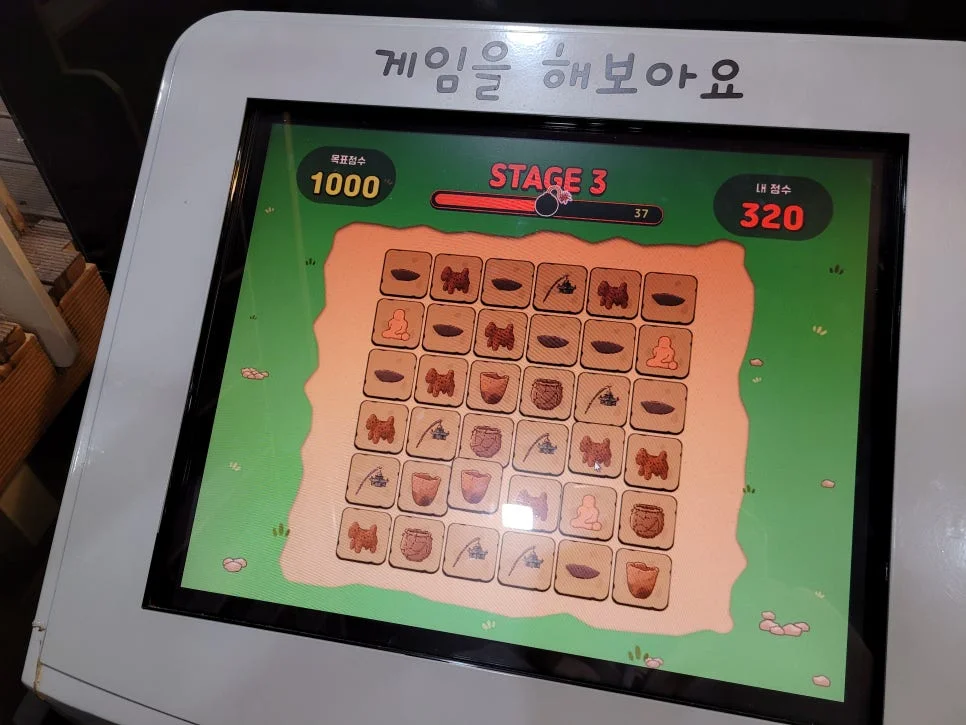
컨셉보다
알아보기 쉬운 쪽을 택했습니다.
블록은 처음에 발굴 현장의 느낌을 주려고 흙에 파묻힌 듯한 음영으로 표현했습니다. 이후 내부 회의에서 유물 카드가 더 명확하게 보여야 한다는 결론을 내려, 블록을 경계가 분명한 사각 타일로 바꾸고 선택 상태를 초록 하이라이트로 구분해 최종안을 완성했습니다.
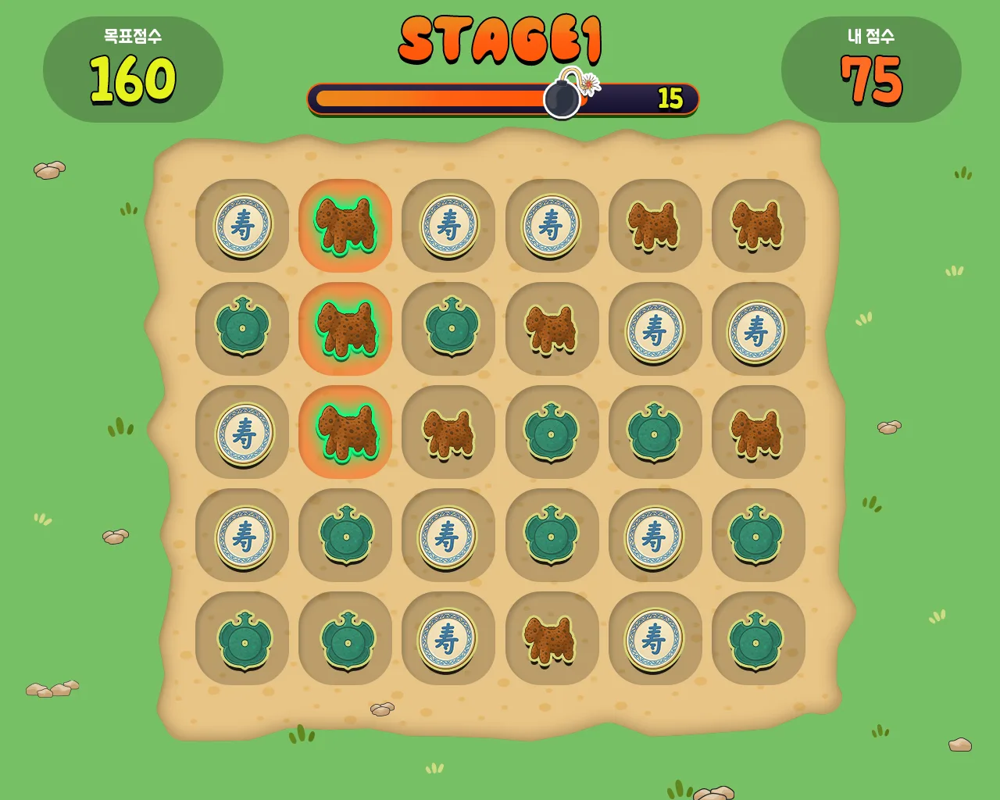
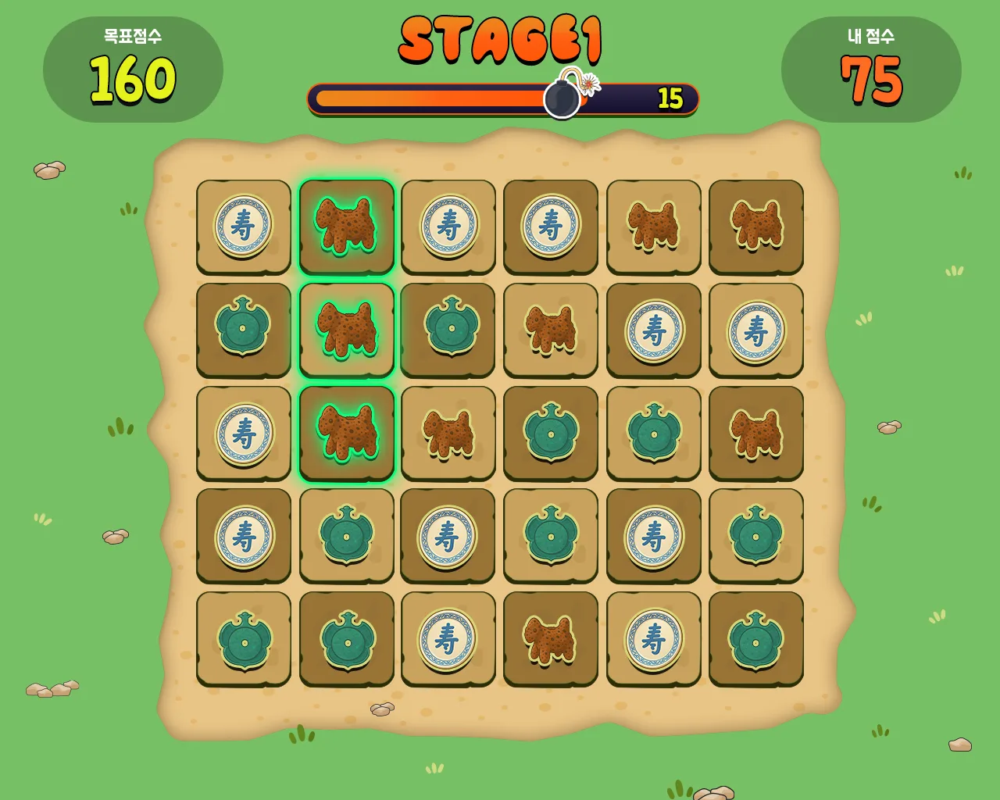
게임이 끝난 뒤에
유물을 다시 만납니다.
게임이 끝나면 모은 유물을 카드로 넘겨 보며 시대·재질·크기와 설명을 확인합니다. 이어서 랭킹을 남기고, 잠시 뒤 타이틀로 돌아가 다음 관람객이 바로 시작합니다.
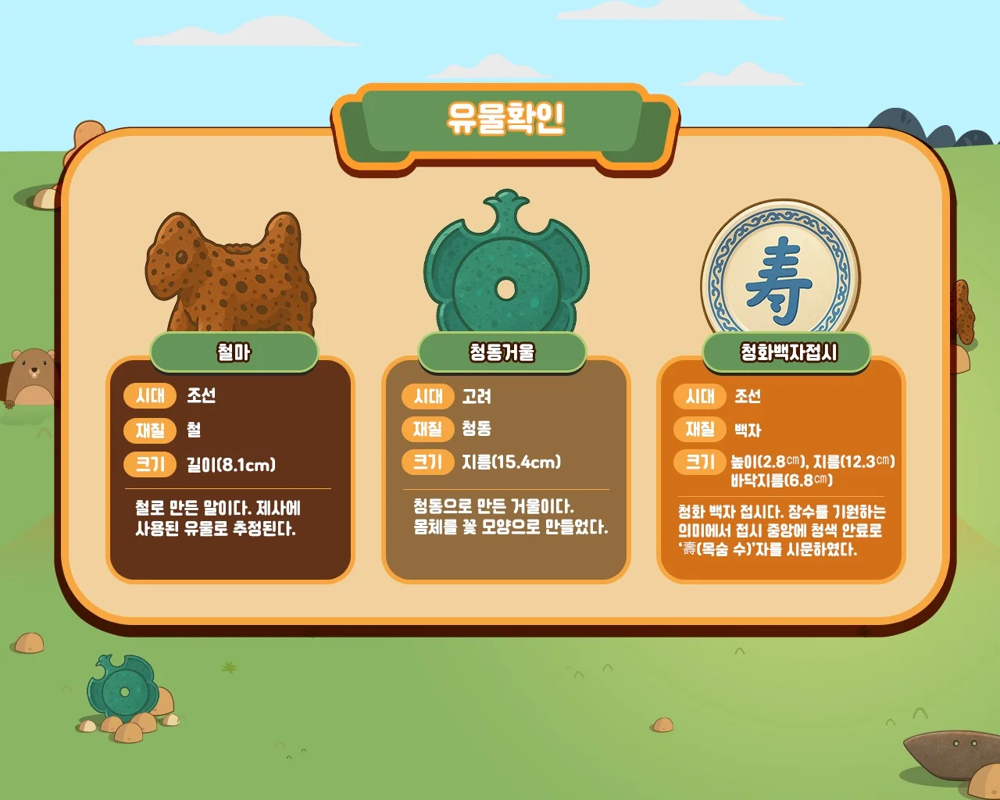
모은 유물을 카드로 넘겨 보며 시대·재질·크기와 설명 확인
판교 RUN은 순위 화면으로 이어지고, 가상 키보드로 이니셜과 방명록을 남김
입력 후 10초가 지나면 타이틀로 자동 복귀해 다음 관람객이 바로 시작
콘셉트부터 유물 비주얼까지
함께 만들었습니다.
고고학자 캐릭터와 두더지 등 등장 캐릭터를 직접 디자인했습니다. 유물 이미지는 박물관에서 받은 실제 유물 목록과 사진을 바탕으로 ChatGPT를 활용해 직접 제작했습니다. 실물의 형태와 문양을 기준으로 삼아, 게임 그래픽 톤과 어린이 관람객에 맞는 친근한 일러스트로 다시 그렸습니다.
UX/UI 디자인 100%, 게임 콘셉트 참여, 캐릭터 디자인, AI 유물 비주얼 제작